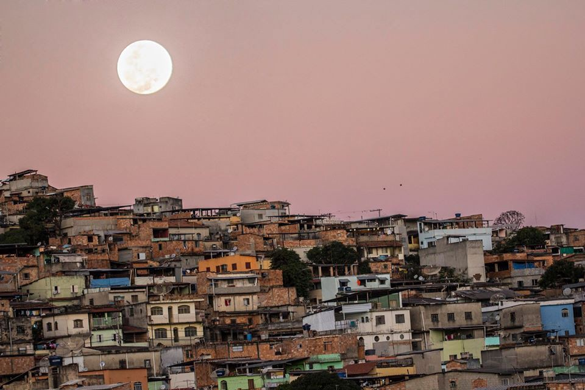

Curiosidades sobre o bairro Cabana
Lojas
Apenas na área central do cabana possuem 4 farmacias, 7 padarias, 3 sacolões, 3 supermercados, 1 loteria, várias lojas de roupas, calçados, restaurantes, entre outras.
Espaço cultural
Está sendo criado um espaço cultural, onde contém reliquias com fotos e vídeos do cabana.

Documentário
O bairro teve um documentário produzido em 2016 por Eustáquio Almeida, onde os primeiros moradores contam a história de como o bairro nasceu e segue até hoje.
Cabana solidária
Um morador da região criou uma campanha beneficiente de arrecadação de alimentos para famílias em dificuldades do Cabana e região, esta campanha será apresentada em formato de live dia 08/05/2021 às 17 horas. Mas para que seja transmitida no youtube, o canal necessita de no minimo 1000 inscritos.
Para mais informações clique aqui!